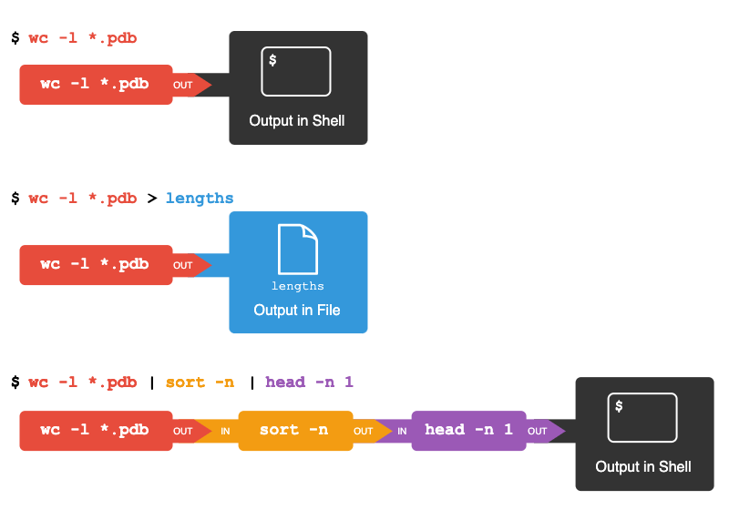
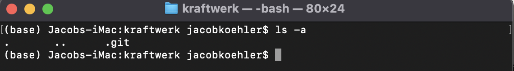
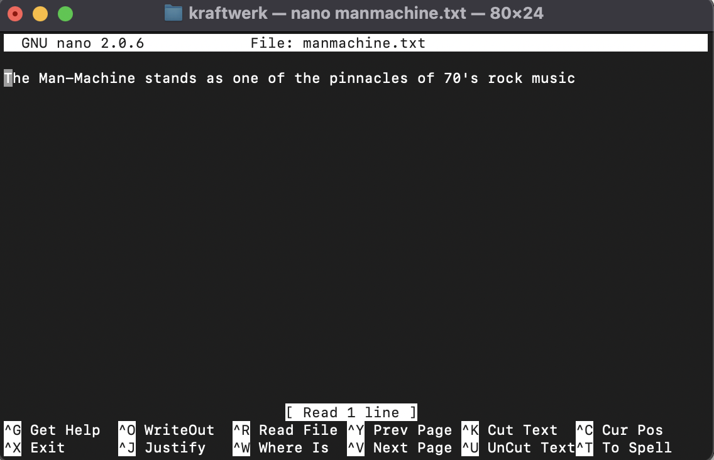
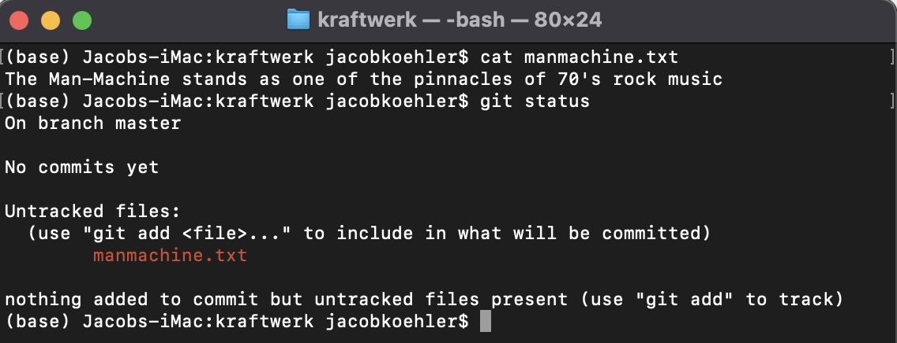

Installations and Introduction to your Terminal#
OBJECTIVES
Navigate files and directories using your terminal
Create, alter, and delete files using your terminal
Display basic information about files using bash commands
Use loops to execute programs from the terminal and store output
REQUIREMENTS
Jupyter notebooks and Jupyter Lab for use locally: Anaconda
VS Code Text Editor: VSCode
Terminal application with
gitinstalled. For windows users, the easiest approach is to download and install git for windows.
Navigating your file system#
Download and unzip the data for this lesson here: shell-lesson-data
Create a new directory on your desktop named
shell-lesson-data.
Basic Filesystem#
The filesystem looks like an upside down tree. The topmost directory is the root directory that holds everything else. We refer to it using a slash character, /, on its own; this character is the leading slash in /Users/nelle.

The user imhotep’s files are stored in /Users/imhotep, user larry’s in /Users/larry, and Nelle’s in /Users/nelle. Nelle is the user in our examples here; therefore, we get /Users/nelle as our home directory. Typically, when you open a new command prompt, you will be in your home directory to start.

Using the Terminal#
In this exercise, our focus will be on using the terminal to navigate files and directories as well as to create and destroy files and directories.

Challenge#
Starting from /Users/nelle/data, which of the following commands could Nelle use to navigate to her home directory, which is /Users/nelle?
cd .cd /cd /home/nellecd ../..cd ~cd homecd ~/data/..cdcd ..
Using the filesystem diagram below, if
pwddisplays/Users/thing, what willls -F ../backupdisplay?
../backup: No such file or directory2012-12-01 2013-01-08 2013-01-272012-12-01/ 2013-01-08/ 2013-01-27/original/ pnas_final/ pnas_sub/
Using the filesystem diagram above, if
pwddisplays/Users/backup, and-rtells ls to display things in reverse order, what command(s) will result in the following output:
pnas_sub/ pnas_final/ original/
ls pwdls -r -Fls -r -F /Users/backup
Pipes and Filters#
Now that we know a few basic commands, we can finally look at the shell’s most powerful feature: the ease with which it lets us combine existing programs in new ways. We’ll start with the directory shell-lesson-data/exercise-data/alkanes that contains six files describing some simple organic molecules. The .pdb extension indicates that these files are in Protein Data Bank format, a simple text format that specifies the type and position of each atom in the molecule.
Use
wcto get a word count for a given file.
What do these numbers mean? (Hint: Look at the help or man)
What does
wc *.pdbdo? What does this mean for the*or wildcard character?
What does
wc -l *.pdbdo?
Suppose we want to write the results of this operation out to a file
lengths.txt.
wc -l *.pdb > lengths.txt
Examine the contents of your new file with
cat lengths.txt.
What do the following commands do?
sort -n lengths.txt > sorted-lengths.txt
$ head -n 1 sorted-lengths.txt
What does the following command do?
sort -n lengths.txt | head -n 1
What does this mean for the | symbol?
To link more operations together we can use the
|function repeatedly, for example:
wc -l *.pdb | sort -n | head -n 1

CHALLENGE
A file called animals.csv (in the shell-lesson-data/exercise-data/animal-counts folder) contains the following data:
2012-11-05,deer,5
2012-11-05,rabbit,22
2012-11-05,raccoon,7
2012-11-06,rabbit,19
2012-11-06,deer,2
2012-11-06,fox,4
2012-11-07,rabbit,16
2012-11-07,bear,1
What text passes through each of the pipes and the final redirect in the pipeline below? Note, the sort -r command sorts in reverse order.
$ cat animals.csv | head -n 5 | tail -n 3 | sort -r > final.txt
Loops#
Example:
$ for filename in basilisk.dat minotaur.dat unicorn.dat
> do
> echo $filename
> head -n 2 $filename | tail -n 1
> done
Example:
$ for x in basilisk.dat minotaur.dat unicorn.dat
> do
> head -n 2 $x | tail -n 1
> done
CHALLENGE
How would you write a loop that echoes all 10 numbers from 0 to 9?
Processing Files#
Nelle is now ready to process her data files using goostats.sh — a shell script written by her supervisor. This calculates some statistics from a protein sample file and takes two arguments:
an input file (containing the raw data)
an output file (to store the calculated statistics)
Since she’s still learning how to use the shell, she decides to build up the required commands in stages. Her first step is to make sure that she can select the right input files — remember, these are ones whose names end in ‘A’ or ‘B’, rather than ‘Z’. Moving to the north-pacific-gyre directory, Nelle types:
$ cd
$ cd Desktop/shell-lesson-data/north-pacific-gyre
$ for datafile in NENE*A.txt NENE*B.txt
> do
> echo $datafile
> done
Now, after executing the script Nelle wants to create summary files, the stats name seems appropriate:
$ for datafile in NENE*A.txt NENE*B.txt
> do
> echo $datafile stats-$datafile
> done
To run the goostats.sh script, Nelle adjusts the code above to:
$ for datafile in NENE*A.txt NENE*B.txt; do bash goostats.sh $datafile stats-$datafile; done
Note we can use ; to separate lines as well.
Finally, to get some output from the code we add printing to the screen to gauge progress:
$ for datafile in NENE*A.txt NENE*B.txt; do echo $datafile;
bash goostats.sh $datafile stats-$datafile; done
Introduction to git#
Now that we have a basic understanding of moving around on our computer, we introduce a tool for keeping track of our work versions. This gives us a historical record of changes and can move backwards and forwards through these changes as we work.
Configuring Git#
To get started, we want to configure a name and email for our git account. This should be the same username and email that you use later to setup a github account. In your terminal, use the following lines of code to configure the username and email, replacing Steven Segal with your username and the ssegal@aol.com with your email.
git config --global user.name "Steven Segal"git config --global user.email "ssegal@aol.com"
Setting up a Text Editor#
Vim is default – you have decisions to make as to whether this is right for you. Depending on your choice of text editor, you will have to enter the appropriate code. For a full list of text editor options see here.
nano:
git config --global core.editor "nano -w"VS code:
git config --global core.editor "code --wait"
Checking Configuration#
To look over your basic configuration settings for git, you can use the following command:
git config --list
A New Project#


For this example, we will create a new directory and locate a new git repository inside of the directory. We want the new directory to be located on our Desktop and will name it kraftwerk. Starting from our root user directory, we will navigate to the Desktop, create a new directory named kraftwerk and move into that directory. The following commands will accomplish this:
cd Desktopmkdir kraftwerkcd kraftwerk
Creating a git Repository#
Now that we have our folder ready and are located inside of the folder kraftwerk on our Desktop, we will create a git repository to track our work. The command git init creates a new repository and we should see evidence of the new repository with the line:
Initialized empty Git repository in
/Users/jacobkoehler/Desktop/kraftwerk/.git/
The repository itself will be a hidden directory. Using our ls -a command, we should see the empty repository.

Creating a new file#
Now, use your text editor to create a new file called manmachine.txt. For example, using the nano editor we would write:
nano manmachine.txt
From here, add the following line to the file:
"The Man-Machine stands as one of the pinnacles of 70's rock music"

We can examine the contents of the file with the cat command:
cat manmachine.txt
and should see the following:

Our purpose here is to keep track of changes to files. Our .git repository is doing this automatically, as we can see with the status command. Note that we preface our commands with git, so we write git status, and see:

As instructed, we want to add our file to be tracked by git. To do so, we write:
git add manmachine.txt
Now, when we examine the status of our repository we should see that a new file has been added to the repository
git status

Now that the file has been added to tracking, we want to save our changes and associate them with a commit message. This message helps associate the changes made with a human readable message. For example, using git commit -m "Started info on manmachine" . Now, we have a version of our work saved that we can return to if we so desire.
To check the status of our repository and whether there have been any changes made to the files we use git status. To see a recent history of our changes, we can use git log.
Making changes and updating the repository#
Now, let’s make changes to the file and see how to keep track of our updates. Open the file using nano manmachine.txt, and add the following text:
"Contains song THE ROBOTS where lyrics reference the revolutionary technique of robotics, and how humans can use them as they wish"
Save the file and exit. Now, check the status of your repository again using git status. You should see that the manmachine.txt file has been modified. To explore the specifics of the changes, we can use git diff. You can see the + sign next to the new additions:

To save a record of our changes, we will again add the changes to the staging area, and commit them accompanied by a message.
git add manmachine.txtgit commit -m "Added info on THE ROBOTS lyrics"
After doing this, we should see no changes staged to commit.
git status
Changing things again#
One more time, let’s add some text to our file.
nano manmachine.txt
"When the song is performed live, the band is traditionally replaced by robots that resemble themselves"
Make sure to add the file changes to be tracked, and commit them with an informative message.
Big Idea: Staging Area#
Our workflow here will be as follows:
Create a folder to house your work
Create a new
gitrepository in that folderWhen changes are made to a file, add the file to be tracked with
git add filenameTo commit changes to your repository use
git commit -m "an informative commit message"

Extra Practice#
Create a new directory and check the status of your repository. Add your repo to the staging area and recheck the status. What do you notice?
What criticism might you have about the following commit message?
git commit -m "changed stuff"
We can add multiple files to the staging area using either wildcards or by multiple adds before a commit. What do you think is a drawback to working on multiple files and using the command:
git add .
Please do the following:
Create a new git repository on your computer called me.
Write a one sentence biography in a file called
me.txt.Commit your changes.
Modify a line and display the differences between updated state and its original state.
Extra Commands#
Tracking Changes
git statusgit addgit commitgit loggit diff
Exploring History
git diff HEADgit diff HEAD~1 manmachine.txtgit show HEAD~2 manmachine.txtgit checkoutgit diff somebiglongstring
HEAD#
git checkout master
PROBLEM#
Create a new file called computerworld.txt with the line of text:
"The album deals with the themes of the rise of computers within society."
Stage the changes and add a second line:
"The track "Computer Love" was released as a seven-inch single in the UK, in July 1981, backed with "The Model", from the group's previous album The Man-Machine. "
Commit the changes with an appropriate message. What would be the output of:
git checkout HEAD computerworld.txtcat computerworld.txt
What is the difference between running:
git loggit log computerworld.txtgit log --patch HEAD~2 *.txt
Setting Up a github.com Account#
Outside of tracking our version history locally, we will use .git to move files back and forth from our local computer to a remote repository on the web. Our remote repository will be located on the website github.com, so first thing we need to do is setup a new account if you don’t have one already. This will have to use the same username and email as your local git configuration, so make sure to check that first.
Creating a New Repository on github.com#
Once you have your account setup, you can create a new repository by clicking the new repository button. Name the repository whatever you would like, and make sure DO NOT ADD A README.md FILE.

Connecting with your local repository#
Once you create the new repository on github.com you should see the following:

We are interested in the commands for push an existing repository from the command line. Making sure you are located in your kraftwerk folder on your desktop with the git repository, you can run the three commands:
git remote add origin https://github.com/jfkoehler/kraftwerk.git
git branch -M main
git push -u origin main
to connect your repository and move the files to your online repo with the push command.
PROBLEM#
Organize the list below into an appropriate order so as to minimize the opportunity for conflicts.
a. Change file computerworld.txt to include text "In two photos, the mannequin representing Karl Bartos is seen playing a Stylophone, an instrument which is featured on the track "Pocket Calculator"."
b. Update remote repo with local changes
c. Celebrate success with beers and kraftwerk soundtrack
d. Update local repo based on remote
e. Stage changes for commit
f. Commit changes locally
Extra: streamlit#
Very nice library for quickly delivering your work through a web app. See the documentation here to follow along the example below.
#pip install streamlit
%%writefile uber.py
import streamlit as st
import pandas as pd
import numpy as np
st.title('Uber pickups in NYC')
DATE_COLUMN = 'date/time'
DATA_URL = ('https://s3-us-west-2.amazonaws.com/'
'streamlit-demo-data/uber-raw-data-sep14.csv.gz')
@st.cache_data
def load_data(nrows):
data = pd.read_csv(DATA_URL, nrows=nrows)
lowercase = lambda x: str(x).lower()
data.rename(lowercase, axis='columns', inplace=True)
data[DATE_COLUMN] = pd.to_datetime(data[DATE_COLUMN])
return data
data_load_state = st.text('Loading data...')
data = load_data(10000)
data_load_state.text("Done! (using st.cache_data)")
if st.checkbox('Show raw data'):
st.subheader('Raw data')
st.write(data)
st.subheader('Number of pickups by hour')
hist_values = np.histogram(data[DATE_COLUMN].dt.hour, bins=24, range=(0,24))[0]
st.bar_chart(hist_values)
# Some number in the range 0-23
hour_to_filter = st.slider('hour', 0, 23, 17)
filtered_data = data[data[DATE_COLUMN].dt.hour == hour_to_filter]
st.subheader('Map of all pickups at %s:00' % hour_to_filter)
st.map(filtered_data)
Writing uber.py